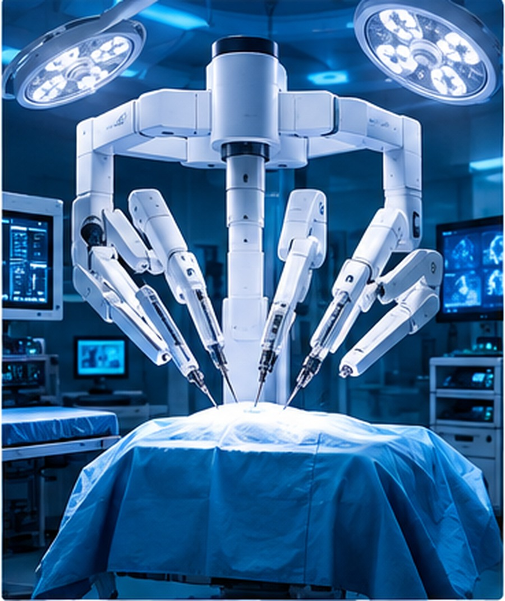
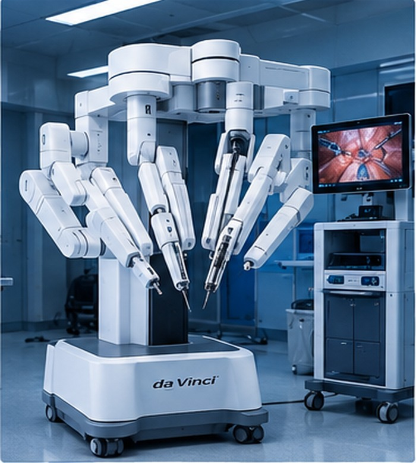
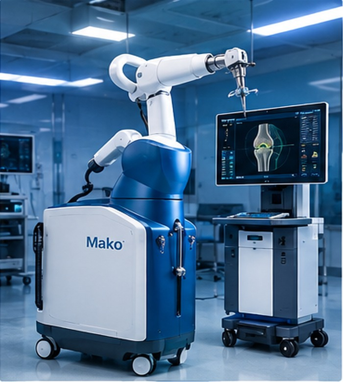
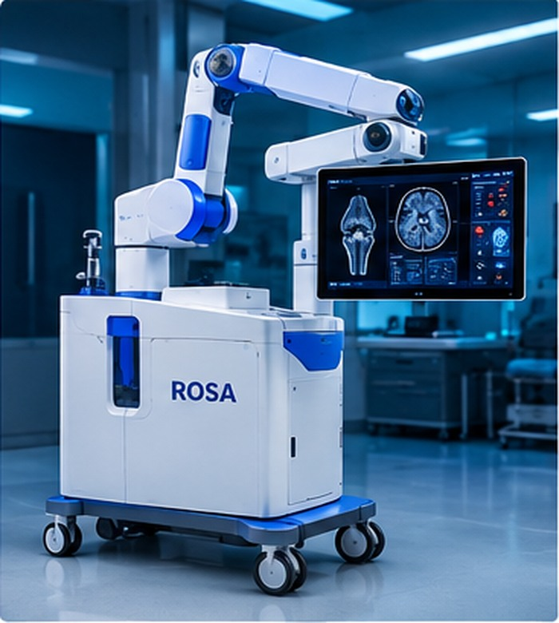
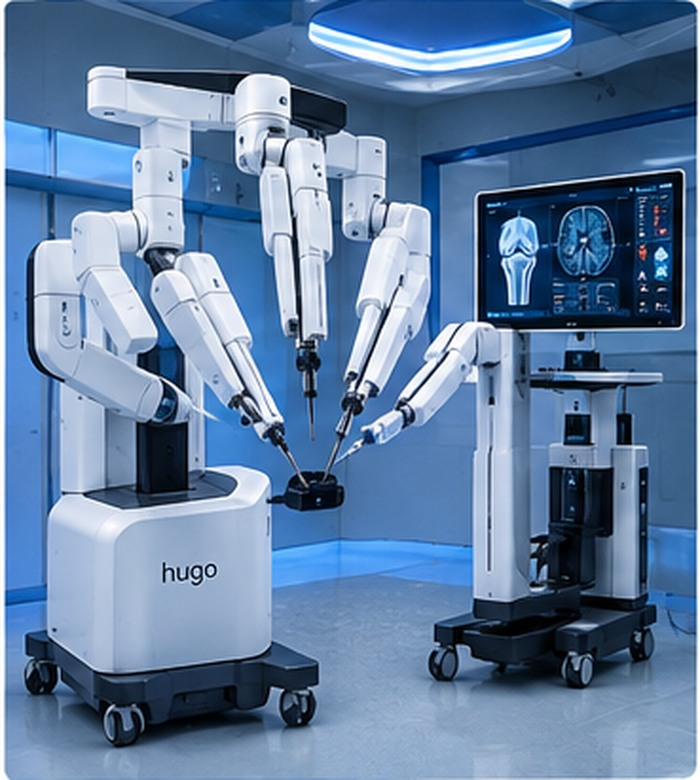
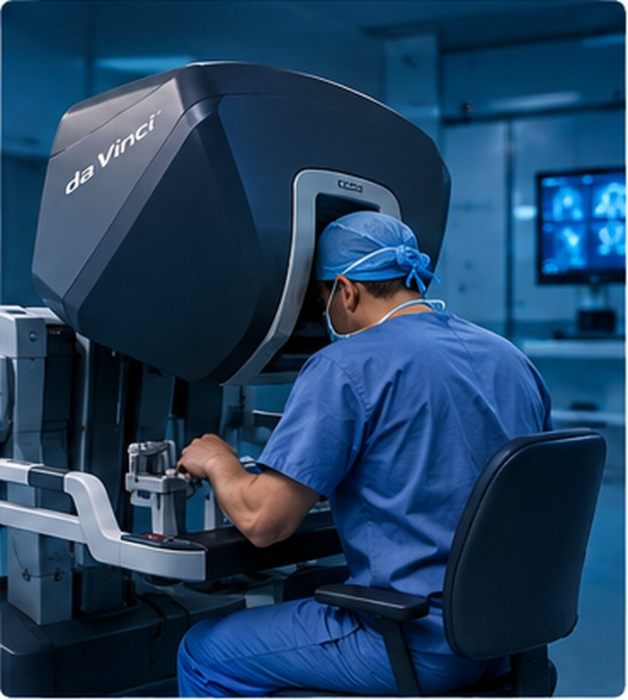

الجرّاح يقود
يتحكم الطبيب المدرّب في الأدوات وفق النظام والإجراء المستخدمين.
اكتشفي كيف تساعد الأنظمة الروبوتية الجرّاحين على التحكم بالأدوات الجراحية، ورؤية التفاصيل، والتخطيط للإجراءات بدقة — مع بقاء الخبرة البشرية في قلب العملية.

هي أسلوب جراحي يستخدم فيه الطبيب نظامًا تقنيًا للتحكم بأدوات جراحية أو للمساعدة في التخطيط والتوجيه. تختلف تفاصيل النظام ووظائفه بحسب الشركة المصنعة ونوع الإجراء.
اقرئي شرح إدارة الغذاء والدواء الأمريكيةيتحكم الطبيب المدرّب في الأدوات وفق النظام والإجراء المستخدمين.
قد توفر بعض الأنظمة أدوات مفصلية أو رؤية مكبرة ثلاثية الأبعاد.
تُقيّم الفوائد والمخاطر والبدائل لكل حالة مع الطبيب المختص.
أمثلة على تقنيات معروفة، ولكل نظام استخدامات محددة وشروط ترخيص وتدريب خاصة به.

جراحة طفيفة التوغلنظام من شركة Intuitive يتيح للجرّاح التحكم بأدوات عبر وحدة تحكم وأذرع وأدوات جراحية، وتختلف الإمكانات بحسب الطراز.

جراحة العظاممن Stryker، ويجمع في تطبيقات استبدال المفاصل بين التخطيط المعتمد على التصوير المقطعي وتقنيات مساعدة الجرّاح.

تطبيقات متعددةمن Zimmer Biomet، وتضم محفظة الأنظمة تطبيقات في بعض إجراءات الركبة والورك والكتف والدماغ بحسب الطراز.

منصة معياريةمن Medtronic، وهو نظام معياري للمساعدة في التحكم بالأدوات أثناء إجراءات جراحية محددة، وفق الاستخدامات المعتمدة محليًا.
أسماء الأنظمة والعلامات التجارية مملوكة لشركاتها. هذه الصفحة للتثقيف العام وليست توصية بنظام معين أو بديلًا عن المشورة الطبية.
تختلف الخطوات حسب الإجراء والنظام، لكن رحلة العمل غالبًا ما تتضمن التخطيط، والتحكم، والمتابعة الطبية.
يراجع الفريق الحالة والصور والفحوصات، ويحدد ملاءمة الإجراء وخطته.
يتحكم الجرّاح المدرّب بالأدوات عبر واجهة التحكم الخاصة بالنظام.
تترجم المنظومة أوامر الطبيب إلى حركات الأدوات وفق خصائص النظام.
يراقب الفريق سير الإجراء ويقدّم الرعاية اللاحقة ويقيّم التعافي.
نقطة أساسية: الأنظمة الجراحية الروبوتية المساعدة لا تعمل بشكل مستقل عن الجرّاح؛ التحكم البشري والتدريب الملائم عنصران أساسيان.
المصدر: FDA ↗تتوقف النتائج على نوع العملية، والحالة الصحية، وخبرة الفريق، والنظام المستخدم. لا توجد فائدة مضمونة للجميع.
بحسب النظام والإجراء
جزء من قرار الاستخدام
قد تُستخدم تقنيات الروبوت أو الملاحة الجراحية في مجالات مختلفة، ولا يعني ذلك أن كل نظام معتمد لكل تخصص.

01تُستخدم بعض الأنظمة في إجراءات محددة مثل بعض جراحات البروستاتا والكلى، وفق الترخيص والخبرة.
تدعم أنظمة مثل Mako بعض إجراءات استبدال مفاصل الركبة والورك، بحسب التطبيق.
تشمل بعض الإجراءات طفيفة التوغل مثل عمليات محددة في البطن، حسب النظام والترخيص.
تُستخدم منصات مختارة في بعض إجراءات الدماغ أو في التوجيه الجراحي المتخصص.
قد يدفع تطور التصوير الطبي، وتحليل البيانات، وأدوات التخطيط، وأبحاث الذكاء الاصطناعي إلى تحسين بعض مراحل الرعاية الجراحية. لكن توافر هذه القدرات يختلف من نظام لآخر، وتحتاج التطبيقات الجديدة إلى تقييم علمي وتنظيمي مناسب.
استكشفي تنظيم الأجهزة الروبوتيةمعلومات موجزة تساعد على فهم التقنية بصورة واقعية ومتوازنة.
تختلف الوظائف والاستخدامات المصرح بها بين الطرز والشركات والبلدان.
يلزم التأكد من تدريب الفريق على النظام المحدد والمحافظة على الكفاءة.
قرار الجراحة يناقَش مع الطبيب، بما يشمل الفوائد والمخاطر والخيارات الأخرى.
المحتوى لأغراض تعليمية فقط، ولا يقدم تشخيصًا أو توصية علاجية أو بديلًا عن استشارة طبيب مؤهل.
هذا المشروع التعليمي عن روبوتات الجراحة أُعدّ بتعاون الطالبات، وبإشراف الأستاذة رايا.
للاطلاع على التفاصيل والاستخدامات المعتمدة، راجعي صفحات الجهات الرسمية التالية.